Vue de J1 (iso 45° B), J1 Parasite torche allumée, J2 de chaque classe, de profil, torche à sa gauche (l'orientation de la session précédente). Trois colonnes : aujourd'hui ; (d1) un facteur constant par classe ; (d2) un facteur recalculé selon la direction de la torche. Corps rendu tel que le jeu le calcule (opacité 1 : l'effacement de la vue de dessus est mis de côté). Découpe 240×240 à 1:1, puis loupe ×3.
Chaque vignette : l'étoile de l'occluder du corps (J2 regarde vers le haut), l'anneau de 15 px où le corps lit sa lumière, en jaune les points que la torche atteint (trait pointillé : d'où elle vient). Le pourcentage est la part éclairée.
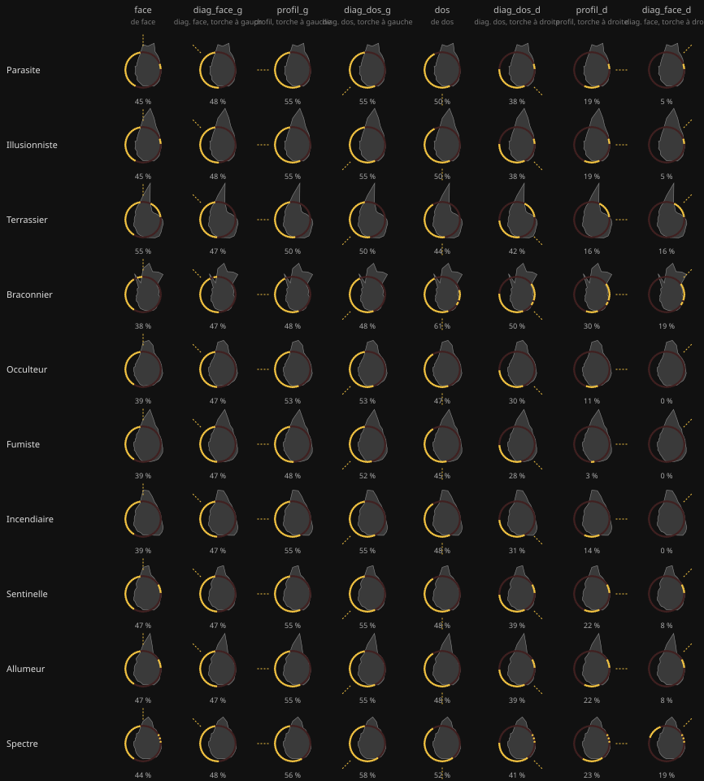
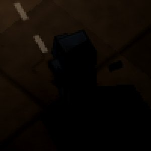 pixels du corps changés : 0 (au plus +0/255) · hors du corps : 0 · plus clairs que le sol : 364 |
pixels du corps changés : 1034 (au plus +123/255) · hors du corps : 411 · plus clairs que le sol : 213 |
pixels du corps changés : 289 (au plus +40/255) · hors du corps : 59 · plus clairs que le sol : 362 |
pixels du corps changés : 0 (au plus +0/255) · hors du corps : 0 · plus clairs que le sol : 56 |
pixels du corps changés : 482 (au plus +145/255) · hors du corps : 1168 · plus clairs que le sol : 56 |
pixels du corps changés : 83 (au plus +15/255) · hors du corps : 166 · plus clairs que le sol : 56 |
pixels du corps changés : 0 (au plus +0/255) · hors du corps : 0 · plus clairs que le sol : 358 |
pixels du corps changés : 1073 (au plus +159/255) · hors du corps : 470 · plus clairs que le sol : 174 |
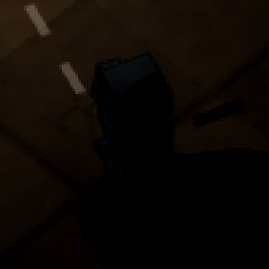 pixels du corps changés : 571 (au plus +41/255) · hors du corps : 111 · plus clairs que le sol : 343 |
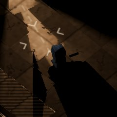 pixels du corps changés : 0 (au plus +0/255) · hors du corps : 0 · plus clairs que le sol : 289 |
pixels du corps changés : 987 (au plus +78/255) · hors du corps : 441 · plus clairs que le sol : 262 |
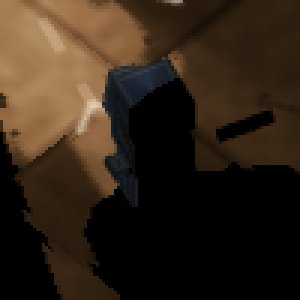 pixels du corps changés : 973 (au plus +118/255) · hors du corps : 479 · plus clairs que le sol : 248 |
pixels du corps changés : 0 (au plus +0/255) · hors du corps : 0 · plus clairs que le sol : 346 |
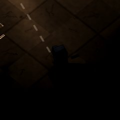 pixels du corps changés : 966 (au plus +80/255) · hors du corps : 298 · plus clairs que le sol : 233 |
pixels du corps changés : 828 (au plus +40/255) · hors du corps : 82 · plus clairs que le sol : 365 |
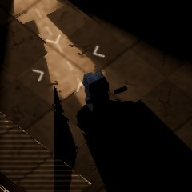 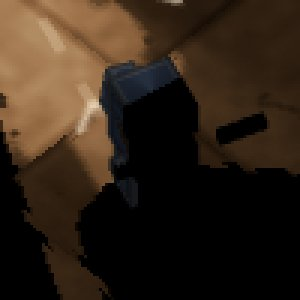 pixels du corps changés : 0 (au plus +0/255) · hors du corps : 0 · plus clairs que le sol : 361 |
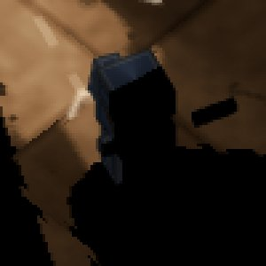 pixels du corps changés : 1215 (au plus +119/255) · hors du corps : 457 · plus clairs que le sol : 69 |
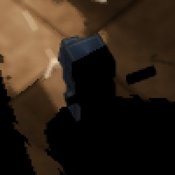 pixels du corps changés : 990 (au plus +40/255) · hors du corps : 172 · plus clairs que le sol : 374 |
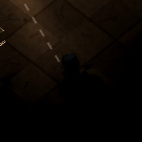 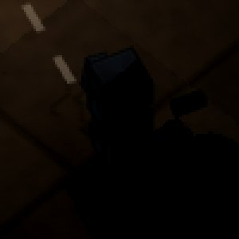 pixels du corps changés : 0 (au plus +0/255) · hors du corps : 0 · plus clairs que le sol : 15 |
pixels du corps changés : 305 (au plus +10/255) · hors du corps : 468 · plus clairs que le sol : 12 |
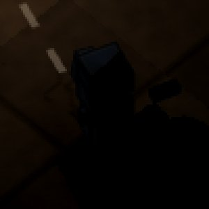 pixels du corps changés : 397 (au plus +43/255) · hors du corps : 857 · plus clairs que le sol : 22 |
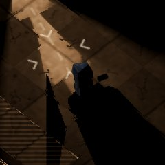 pixels du corps changés : 0 (au plus +0/255) · hors du corps : 0 · plus clairs que le sol : 392 |
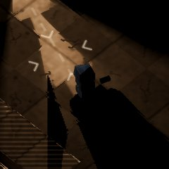 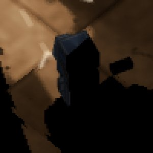 pixels du corps changés : 1245 (au plus +81/255) · hors du corps : 299 · plus clairs que le sol : 272 |
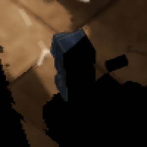 pixels du corps changés : 1222 (au plus +81/255) · hors du corps : 279 · plus clairs que le sol : 323 |
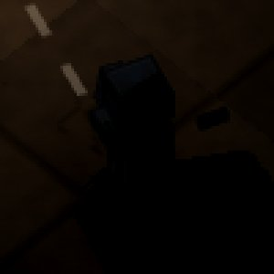 pixels du corps changés : 0 (au plus +0/255) · hors du corps : 0 · plus clairs que le sol : 183 |
pixels du corps changés : 696 (au plus +159/255) · hors du corps : 891 · plus clairs que le sol : 30 |
pixels du corps changés : 548 (au plus +80/255) · hors du corps : 586 · plus clairs que le sol : 155 |
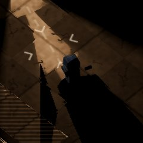 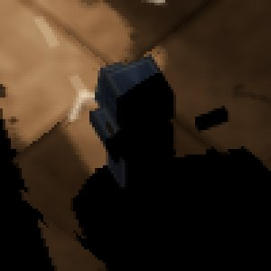 pixels du corps changés : 0 (au plus +0/255) · hors du corps : 0 · plus clairs que le sol : 202 |
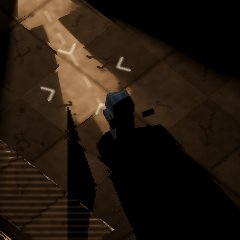 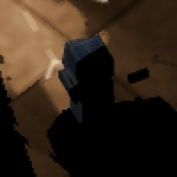 pixels du corps changés : 860 (au plus +156/255) · hors du corps : 823 · plus clairs que le sol : 85 |
pixels du corps changés : 704 (au plus +77/255) · hors du corps : 498 · plus clairs que le sol : 204 |
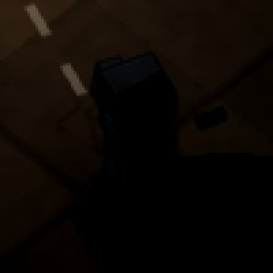 pixels du corps changés : 0 (au plus +0/255) · hors du corps : 0 · plus clairs que le sol : 350 |
pixels du corps changés : 1108 (au plus +159/255) · hors du corps : 560 · plus clairs que le sol : 103 |
pixels du corps changés : 901 (au plus +79/255) · hors du corps : 187 · plus clairs que le sol : 341 |
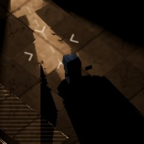 pixels du corps changés : 0 (au plus +0/255) · hors du corps : 0 · plus clairs que le sol : 252 |
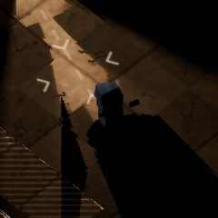 pixels du corps changés : 867 (au plus +123/255) · hors du corps : 772 · plus clairs que le sol : 192 |
pixels du corps changés : 766 (au plus +51/255) · hors du corps : 394 · plus clairs que le sol : 254 |
pixels du corps changés : 0 (au plus +0/255) · hors du corps : 0 · plus clairs que le sol : 295 |
pixels du corps changés : 1018 (au plus +124/255) · hors du corps : 534 · plus clairs que le sol : 110 |
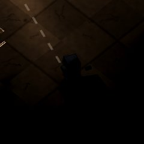 pixels du corps changés : 797 (au plus +78/255) · hors du corps : 267 · plus clairs que le sol : 327 |
pixels du corps changés : 0 (au plus +0/255) · hors du corps : 0 · plus clairs que le sol : 135 |
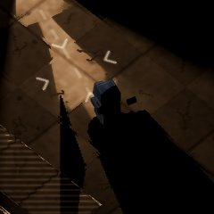 pixels du corps changés : 764 (au plus +156/255) · hors du corps : 999 · plus clairs que le sol : 69 |
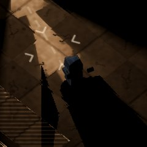 pixels du corps changés : 611 (au plus +32/255) · hors du corps : 289 · plus clairs que le sol : 139 |
pixels du corps changés : 0 (au plus +0/255) · hors du corps : 0 · plus clairs que le sol : 20 |
pixels du corps changés : 358 (au plus +19/255) · hors du corps : 1086 · plus clairs que le sol : 19 |
pixels du corps changés : 296 (au plus +9/255) · hors du corps : 827 · plus clairs que le sol : 24 |
pixels du corps changés : 0 (au plus +0/255) · hors du corps : 0 · plus clairs que le sol : 66 |
pixels du corps changés : 497 (au plus +68/255) · hors du corps : 1027 · plus clairs que le sol : 67 |
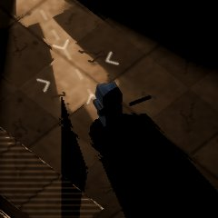 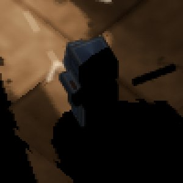 pixels du corps changés : 584 (au plus +77/255) · hors du corps : 1123 · plus clairs que le sol : 68 |
pixels du corps changés : 0 (au plus +0/255) · hors du corps : 0 · plus clairs que le sol : 78 |
pixels du corps changés : 488 (au plus +118/255) · hors du corps : 996 · plus clairs que le sol : 78 |
pixels du corps changés : 497 (au plus +118/255) · hors du corps : 1016 · plus clairs que le sol : 79 |
pixels du corps changés : 0 (au plus +0/255) · hors du corps : 0 · plus clairs que le sol : 92 |
pixels du corps changés : 629 (au plus +42/255) · hors du corps : 838 · plus clairs que le sol : 96 |
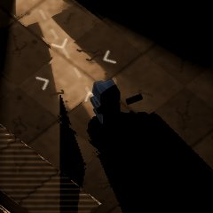 pixels du corps changés : 654 (au plus +118/255) · hors du corps : 1013 · plus clairs que le sol : 67 |
pixels du corps changés : 0 (au plus +0/255) · hors du corps : 0 · plus clairs que le sol : 258 |
pixels du corps changés : 685 (au plus +78/255) · hors du corps : 476 · plus clairs que le sol : 240 |
pixels du corps changés : 814 (au plus +123/255) · hors du corps : 583 · plus clairs que le sol : 106 |
pixels du corps changés : 0 (au plus +0/255) · hors du corps : 0 · plus clairs que le sol : 83 |
pixels du corps changés : 556 (au plus +41/255) · hors du corps : 953 · plus clairs que le sol : 84 |
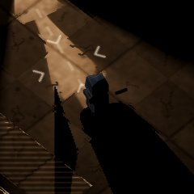 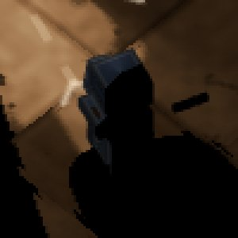 pixels du corps changés : 562 (au plus +80/255) · hors du corps : 1009 · plus clairs que le sol : 80 |
J2 en diagonale, face à la torche, la torche à sa droite. Fumiste puis Spectre, à b10 et à mi-distance, aujourd'hui / (d1) / (d2). Le Fumiste ne montre aucun pixel, même à mi-portée : son anneau est tout entier dans l'ombre de sa propre arme, et aucun facteur n'y change rien. (d2) assombrit le Spectre (×0,30), parce que le Parasite, dans cette direction, est encore plus sombre que lui.
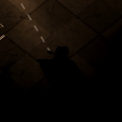 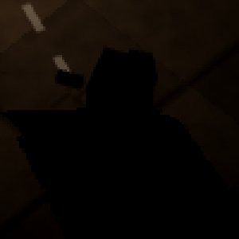 |
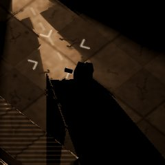 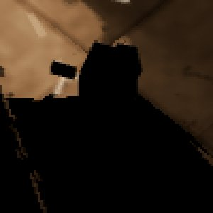 |
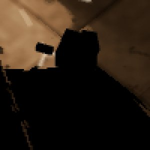 |
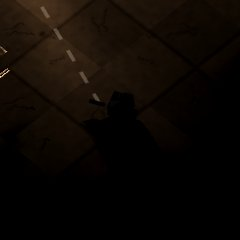 |
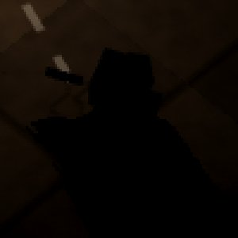 |
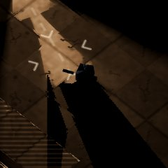 |
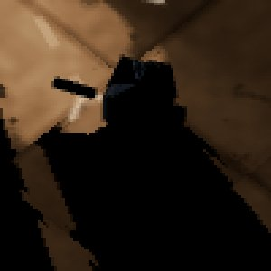 |
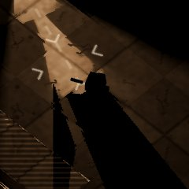 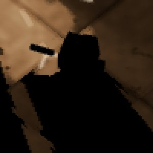 |